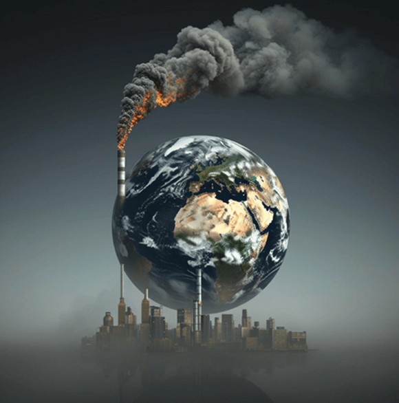
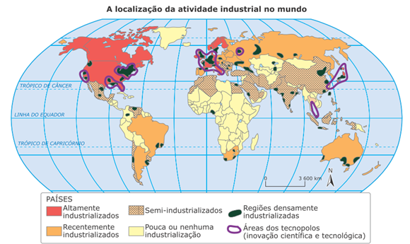
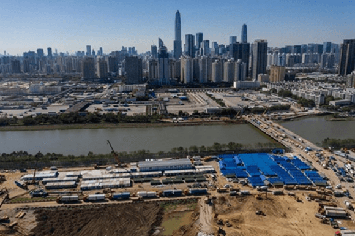
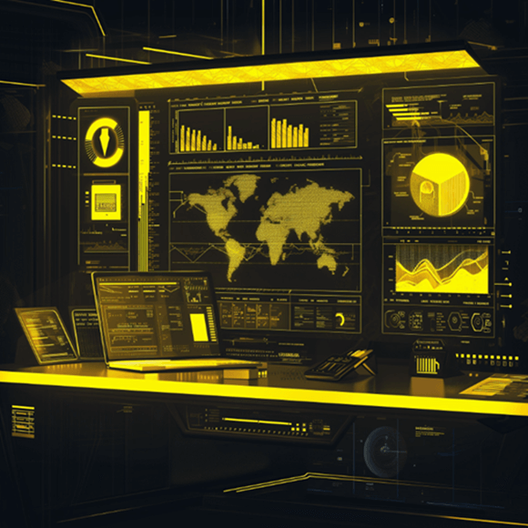
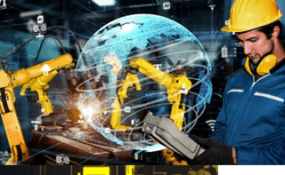
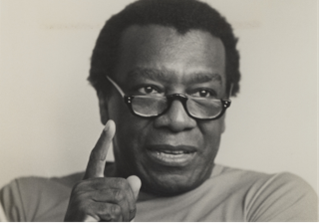
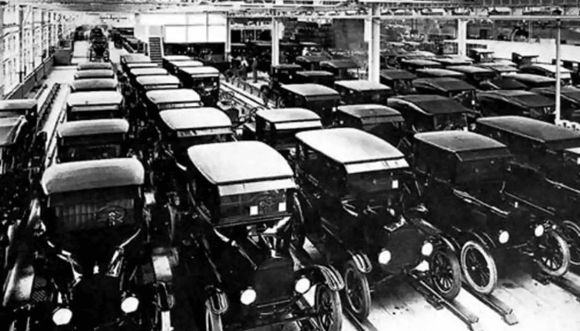

Conteúdo: Industrialização; Globalização; meio técnico-científico-internacional; fordismo;
keynesianismo; Multinacionais; Nova Divisão Internacional do Trabalho.
Objetivo: Compreender a constituição do meio técnico-científico-informacional e sua relação
com os processos industriais no período atual da globalização.
Digite seu nome
Introdução
Naula passada vimos que a Revolução Industrial mudou o mundo. Máquinas a
vapor, produção têxtil mecanizada e ferrovias - tudo isso transformou a produção e a sociedade no final do
século XVIII.
Mas o que aconteceu depois dessa revolução inicial? Como chegamos ao mundo atual de alta tecnologia e
globalização? É isso que vamos explorar hoje!
No período atual, vivemos em um mundo interconectado, onde a informação e a tecnologia moldam nossa economia
e nossas vidas de maneiras inimagináveis na época da Revolução Industrial.
Nesta aula, vamos desvendar o meio técnico-científico-informacional, entender o Fordismo, o Keynesianismo e
como as multinacionais se encaixam na Nova Divisão Internacional do Trabalho (NDIT).
Por que é tão importante estudar tudo isso? Bem, compreender esses conceitos nos ajuda a decifrar a
complexidade da economia global de hoje. Além disso, nos prepara para analisar criticamente o mundo ao nosso
redor, entendendo seus impactos sociais, econômicos e ambientais. Vamos lá!
Fonte: pexels.com
Questões para responder serem respondidas no caderno sobre o tema da aula de hoje:
1. O que foi a Revolução Industrial e como ela transformou a produção e a sociedade?
2. Como a industrialização impactou as cidades e as estruturas sociais?
3. Quais países se destacaram no desenvolvimento industrial durante a fase concorrencial da história do capitalismo?
4. Explique o conceito de globalização e como ela está relacionada à industrialização.
5. Cite exemplos de países que se tornaram potências manufatureiras devido à globalização.
6. Qual é o papel das multinacionais na economia global? Dê exemplos de empresas multinacionais.
7. Explique o Fordismo e como ele revolucionou a produção em massa.
8. O que é o Keynesianismo e como ele propõe que o Estado intervenha na economia?
9. Descreva o Meio Técnico-Científico-Informacional (MTCI) e sua importância na era contemporânea.
10. Como a Nova Divisão Internacional do Trabalho (NDIT) mudou a forma como o trabalho e a produção estão organizados em nível global? Dê exemplos de países envolvidos nesse processo.
Industrialização e globalização
Você já parou para pensar como nossas vidas foram transformadas pela industrialização?
Imagine sair da era das pequenas produções artesanais para um mundo de fábricas gigantescas, máquinas
avançadas e produtos em larga escala. Isso é a industrialização!

Fonte: pexel.com
A industrialização não apenas mudou a forma como produzimos, mas também transformou economias e sociedades.
Aqueles tempos em que a agricultura era a principal atividade econômica deram lugar a uma nova era de
produção em massa. Com a adoção de tecnologias avançadas e máquinas poderosas, fábricas surgiram por toda
parte, impulsionando o crescimento econômico e criando empregos.
Mas não para por aí! Essa revolução industrial também mudou nossas cidades. O crescimento urbano foi
acelerado, a migração de áreas rurais para áreas urbanas se intensificou e novas estruturas sociais
surgiram.

Na história do capitalismo, países como os da Europa Ocidental, América Anglo-Saxônica e Japão se destacaram
por seu desenvolvimento industrial durante a fase concorrencial. Eles conseguiram construir economias fortes
que se mantêm até hoje como as regiões mais industrializadas do mundo. Por outro lado, outras nações
industrializadas seguiram um caminho diferente, impulsionadas pelo Estado ou pela ascensão do capitalismo
monopolista e exportação de capitais. Esse processo resultou em uma distribuição desigual da indústria pelo
mundo, refletindo as diferentes formas de desenvolvimento econômico ao longo do tempo.
Agora, vamos falar sobre a globalização. É como se o mundo todo estivesse cada vez mais conectado, não é
mesmo? E adivinha quem teve um papel crucial nisso? A industrialização!
A globalização é o processo pelo qual países, economias e culturas se integram e se conectam
em escala mundial. E adivinha quem foi o grande impulsionador desse processo? A industrialização!
China, Índia e Alemanha são exemplos brilhantes desse fenômeno. A China, conhecida por suas fábricas que
produzem de tudo, desde eletrônicos até roupas, se tornou uma potência manufatureira global. Isso
impulsionou sua economia a níveis estratosféricos, tornando-a uma das principais exportadoras do mundo.

Cidade de Shenzhen, o “Vale do Silício chinês”. Fonte:
https://gauchazh.clicrbs.coml
A Índia não ficou para trás! Com sua indústria de tecnologia da informação em alta, cidades como Bangalore e
Hyderabad se destacam como centros globais de serviços de software e outsourcing. Um verdadeiro boom
tecnológico!
Bangalore, ìndia. Fonte: pexel.com
E que tal a Alemanha? Ah, a Alemanha! Conhecida por sua indústria automobilística de renome mundial, como
Volkswagen, BMW e Mercedes-Benz, ela é líder na produção de veículos e tecnologia automotiva. Os carros
alemães são sinônimos de qualidade e estão em alta demanda em todo o mundo.
Agora, vamos para os dados! Em 2021, a China se tornou a maior economia do mundo em termos de PIB em
paridade de poder de compra. A Índia é o terceiro maior produtor de aço do mundo, refletindo seu crescimento
industrial. E a Alemanha? Ah, a Alemanha é a maior economia da Europa e uma das principais exportadoras
mundiais. Incrível, não é mesmo?
Mas nem tudo são flores. A industrialização também traz seus desafios. Como lidar com os impactos no meio
ambiente? E a migração das áreas rurais para as urbanas, quais os impactos sociais? E a desigualdade
econômica, como ela é afetada pela concentração de indústrias em determinadas regiões?
Agora é com você!
Pergunta para reflexão: Qual o papel das multinacionais nesse cenário de industrialização e globalização?
Como as relações comerciais entre países foram influenciadas por esse processo? E a tecnologia, como ela tem
facilitado toda essa integração industrial global?
Meio Técnico-Científico-Informacional (MTCI)
Vamos agora adentrar o fascinante mundo do Meio Técnico-Científico-Informacional, ou simplesmente MTCI. Esse
conceito, cunhado pelo renomado geógrafo brasileiro Milton Santos, é essencial para compreendermos a era
contemporânea e a forma como a tecnologia e a informação moldam nossa sociedade.

Fonte: pexel.com
Milton Santos define o MTCI como um conjunto de técnicas, métodos e sistemas utilizados na produção
contemporânea, aliados ao conhecimento científico e à difusão massiva de informações. É como se fosse o
cérebro por trás da economia globalizada, guiando os processos industriais e as interações sociais.
Importância do MTCI na Era Contemporânea
Para entendermos a importância do MTCI, basta olharmos ao nosso redor: smartphones que conectam pessoas em
diferentes continentes, fábricas automatizadas que produzem em alta escala, algoritmos que guiam as decisões
financeiras. Tudo isso faz parte do MTCI.
Na era contemporânea, o MTCI se tornou um pilar fundamental da economia, impulsionando a inovação, a
produtividade e a competitividade das nações no cenário global.
Como a Tecnologia e a Informação Moldam os Processos Industriais e a Economia Global
Vamos agora mergulhar um pouco mais fundo nesse universo. A tecnologia e a informação estão intrinsecamente
ligadas aos processos industriais modernos.
Por exemplo, a automação nas fábricas permite uma produção mais eficiente e rápida, reduzindo custos e
aumentando a competitividade das empresas no mercado global.

Automação nas fábricas. Fonte: Pixalbay.
Além disso, a informação é o combustível da economia atual. Empresas que conseguem coletar, analisar e
utilizar dados de forma eficaz têm uma vantagem significativa.
Exemplos Práticos do MTCI
Vamos trazer alguns exemplos práticos para ilustrar o MTCI em ação:
Indústria 4.0: Este é um termo que se refere à quarta revolução industrial, onde a fusão de
tecnologias está transformando os processos de produção. Robôs colaborativos, Internet das
Coisas
(IoT) e análise de dados em tempo real são alguns dos pilares dessa revolução.
Cidades Inteligentes: Aqui vemos o MTCI aplicado no contexto urbano. Sensores que monitoram o
tráfego, sistemas de iluminação inteligente que economizam energia e aplicativos que facilitam a
vida dos cidadãos são exemplos disso.
Logística Global: A forma como mercadorias são transportadas pelo mundo também é influenciada
pelo
MTCI. Rastreamento por GPS, sistemas de gestão de estoque automatizados e algoritmos de
otimização
de rotas são essenciais para uma logística eficiente.
Comparação entre Países no Uso do MTCI
Para entendermos melhor a aplicação do MTCI, podemos comparar diferentes países:
Estados Unidos: Uma potência no uso do MTCI, os Estados Unidos são líderes em inovação
tecnológica. Empresas
como Google, Apple e Amazon são exemplos de como a tecnologia impulsiona a economia americana.
Japão: Conhecido pela sua eficiência e precisão, o Japão utiliza o MTCI em sua indústria
automotiva, na
robótica e em sistemas de transporte avançados.
Brasil: O Brasil ainda está em processo de adoção plena do MTCI, mas já vemos avanços.
Startups de
tecnologia, aplicativos de serviços e automação industrial são alguns exemplos do uso crescente da
tecnologia no país.
Resumo da Definição de MTCI por Milton Santos

LO
Meio Técnico-Científico-Informacional (MTCI), conforme definido pelo renomado geógrafo brasileiro Milton
Santos, representa uma nova fase na evolução da sociedade moderna. Nesta fase, a interação entre
ciência, tecnologia e mercado se torna central para entendermos as dinâmicas globais. O MTCI reflete a
profunda interação entre ciência e técnica, a ponto de alguns autores preferirem o termo "tecnociência"
para ressaltar a inseparabilidade desses conceitos e práticas.
O MTCI é marcado pela presença do mercado global, onde a ciência e a tecnologia se tornam impulsionadoras
do crescimento econômico e das mudanças sociais. Os objetos técnicos dessa fase são simultaneamente
técnicos e informacionais, visto que surgem como informação e têm a informação como principal energia de
funcionamento. Milton Santos destaca que a união entre técnica, ciência e mercado global oferece uma
nova interpretação à questão ambiental, uma vez que as mudanças na natureza também se subordinam a essa
lógica.
Neste período, observamos uma transformação profunda da paisagem e dos espaços geográficos. A natureza
natural começa a recuar diante do avanço da técnica, e os espaços são cada vez mais requalificados para
atender aos interesses dos atores hegemônicos da economia, cultura e política. O MTCI, portanto, é a
face geográfica da globalização, onde o espaço tende a funcionar como uma unidade, seguindo uma lógica
global que se impõe a todos os territórios e contribui para os processos encadeados da globalização. É
uma nova era em que a informação se torna o vetor fundamental do processo social, moldando a vida e a
interação humana em escala global.
Fordismo: A Revolução da Produção em Massa
Vamos começar com o Fordismo, uma verdadeira revolução na forma como produzimos bens. Imagine-se nos anos
1900, lá nos Estados Unidos. Henry Ford, o cara por trás da famosa Ford Motors, sacudiu o mundo com uma
ideia simples, mas genial: a linha de produção em massa.

Fonte: Estudo prático/fordismo.
Isso mesmo, pessoal! O Fordismo trouxe a ideia de que, ao dividir o trabalho em tarefas simples e
repetitivas, era possível aumentar a eficiência e reduzir custos. O resultado? Carros, por exemplo, que
antes eram um luxo para poucos, se tornaram acessíveis para a classe média.
E não foi só nos EUA não, meus amigos. Olha só o Japão! Depois da Segunda Guerra Mundial, o país adotou o
Fordismo e virou potência automobilística com empresas como Toyota e Honda dominando o mercado global.
Keynesianismo: O Estado como Regulador da Economia
Agora vamos falar do Keynesianismo, uma abordagem econômica que ganhou destaque após a Grande Depressão nos
anos 1930. Imagina o caos econômico daquela época, com desemprego em alta e empresas fechando as portas.
Foi aí que John Maynard Keynes entrou em cena com uma ideia inovadora: o Estado precisava intervir na
economia para estimular o crescimento. Ele propôs aumentar os gastos públicos em momentos de crise, investir
em obras públicas e reduzir impostos para incentivar o consumo.
E olha só que interessante, pessoal! O Brasil, lá nos anos 1950 e 1960, abraçou o Keynesianismo com o
governo de Juscelino Kubitschek. A construção de Brasília e a implementação de políticas de industrialização
foram alguns dos resultados dessa abordagem.
Duas Ideias, um Impacto Global
E assim, pessoal, vimos como o Fordismo revolucionou a produção em massa, tornando produtos acessíveis para o
grande público. E o Keynesianismo trouxe a noção de que o Estado pode e deve intervir na economia para
promover o crescimento e estabilidade.
Essas ideias, que surgiram em contextos históricos diferentes, tiveram um impacto global. De carros nos
Estados Unidos à produção de tecnologia no Japão, do crescimento econômico no Brasil às políticas de
estímulo na Europa, o Fordismo e o Keynesianismo moldaram o mundo em que vivemos hoje.
Empresas Multinacionais: Gigantes da Economia Global
Para começar, vamos entender o que são as empresas multinacionais. São aquelas grandes empresas que operam
em diversos países ao redor do mundo, não se limitando às fronteiras nacionais. Elas têm uma presença
poderosa e influente na economia global, muitas vezes dominando setores inteiros.
Vamos pensar em exemplos concretos. A gigante do varejo, Walmart, é um exemplo clássico de multinacional.
Com lojas em mais de 25 países e uma enorme cadeia de suprimentos, o Walmart é uma força a ser considerada
no mundo do comércio global.
Outro exemplo é a Apple. Com seus produtos icônicos como o iPhone e o MacBook, a Apple tem fábricas e
escritórios em diversos países, coordenando uma complexa cadeia de produção global.
O Papel das Multinacionais na Economia
Essas empresas não apenas vendem produtos, mas também moldam a economia global. Elas influenciam as
políticas governamentais, a distribuição de recursos e até mesmo as tendências de consumo.
As multinacionais também têm um grande impacto nos países onde operam. Por um lado, podem trazer empregos e
investimentos, mas por outro, também podem gerar questões de desigualdade, exploração e impactos ambientais.
Nova Divisão Internacional do Trabalho (NDIT)
Agora vamos falar sobre a NDIT, que é a forma como o trabalho e a produção estão organizados em nível
global.
Antes, tínhamos uma divisão simples entre países desenvolvidos, que produziam bens de alto valor agregado, e
países em desenvolvimento, que forneciam mão de obra barata e recursos naturais.
Mudanças na Divisão do Trabalho
Mas a NDIT mudou isso. Agora, vemos uma complexa rede de produção global, onde diferentes etapas do processo
produtivo são feitas em diferentes países. Por exemplo, um carro pode ser projetado nos EUA, ter suas peças
fabricadas na China, montado no México e vendido na Europa.
Exemplos de Países na NDIT
Vamos olhar para alguns exemplos concretos. A China se tornou conhecida como a "fábrica do mundo", com suas
enormes fábricas produzindo uma variedade impressionante de produtos para exportação.
O México, por sua vez, se destaca na montagem de produtos eletrônicos e automóveis, muitas vezes em parceria
com empresas dos EUA.
E o Brasil, com sua vasta agricultura e recursos naturais, muitas vezes fornece matéria-prima para essas
cadeias de produção globais.
Questões para Reflexão:
Agora, vamos nos questionar um pouco. Como essa nova divisão do trabalho afeta os empregos e salários nos
diferentes países? Quais são as consequências sociais e ambientais dessa interconexão global?
Será que os benefícios econômicos das multinacionais estão sendo distribuídos de forma justa? E como
podemos pensar em um modelo econômico mais sustentável e equitativo em um mundo cada vez mais
globalizado?
Estas são apenas algumas questões para nos fazer pensar sobre a realidade complexa em que vivemos, onde
as fronteiras econômicas se tornam cada vez mais difusas e interligadas. A economia global é uma teia
intricada de relações, e compreendê-la é o primeiro passo para transformá-la de maneira positiva.
Reforce seu conhecimento
Selecione abaixo os conceitos com seu pares correspondentes sobre os tópicos estudados na aula
de hoje:
Industrialização
Fábricas
Globalização
Conexão
Tecnologia
Inovação
Multinacionais
Global
Fordismo
Produção em Massa
Keynesianismo
Intervenção Estatal
Não existe pergunta boba! A Ciência é feita de perguntas!
P:
Qual foi o impacto da Revolução Industrial na vida das pessoas comuns?
R: A Revolução Industrial teve diversos impactos na vida das pessoas
comuns.
Entre eles, o surgimento das fábricas e o aumento da urbanização levaram a mudanças nas condições de
trabalho
e no estilo de vida das pessoas. Muitos trabalhadores passaram a viver em áreas urbanas próximas às
fábricas,
enfrentando longas jornadas de trabalho e condições precárias.
P:Como a globalização afeta o consumo de produtos
ao redor do mundo?
R: A globalização impacta diretamente o consumo de produtos ao redor do
mundo. Com a interconexão das economias, produtos fabricados em um país podem ser facilmente encontrados e
consumidos em outros. Isso leva a uma maior diversidade de produtos disponíveis, mas também pode resultar em
padrões de consumo padronizados em todo o mundo.
P:
Como a tecnologia tem influenciado a indústria moderna?
R: A tecnologia tem sido fundamental para a indústria moderna,
possibilitando
a automação de processos, o desenvolvimento de novos materiais e produtos, e a otimização da produção.
Máquinas avançadas, robótica e a digitalização de processos têm aumentado a eficiência e a produtividade nas
fábricas, resultando em uma indústria mais ágil e competitiva.
Desafio - Jornada do herói: A Travessia do Primeiro Limiar
Nesta aula, vamos conhecer A Travessia do Primeiro Limiar, que é o momento (sem volta) que o herói
se compromete com sua jornada.
Como sempre, formem seus grupos e use a criatividade para lidar com esse desafio.
Instruções
Forme um grupo com 5-6 estudantes;
Leia o texto abaixo e discuta com seu grupo o conteúdo das questões;
Faça anotações em seu caderno;
Seja criativo, use os conhecimentos que você já possui sobre o Desafio.
Tempo da atividade: 25 minutos.
A Travessia do Primeiro Limiar (5)
Chegamos ao estágio em que o herói já ouviu o Chamado, manifestou suas dúvidas e apreensões,
superou-as e já fez todos os preparativos junto com seu mentor para iniciar sua aventura.
Leia a passagem abaixo:
“As hostes
dos Buscadores agora são mais rarefeitas. Alguns dentre nós desistiram, mas os poucos que
restaram estão prontos para cruzar o limiar e realmente começar a aventura. Os problemas de
Nossa Tribo estão nítidos para todos e são desesperantes - algo tem que ser feito, e já!
Preparados ou não, saímos da aldeia e deixamos nossas coisas para trás. Ao nos afastarmos,
sentimos como nos puxam os cordões de tudo o que nos liga às pessoas que amamos. E difícil
cortá-los, mas respiramos fundo e vamos em frente, mergulhando no abismo do desconhecido.
Entramos numa estranha terra de ninguém, um mundo entre mundos, uma zona de transição que pode
ser desolada e solitária ou em alguns casos, fervilhante de vida. Sentimos a presença de outros
seres, outras forças, com espinhos agudos ou garras afiadas, guardando o caminho do tesouro que
buscamos. Mas agora não há como voltar, todos sentimos isso. A aventura começou, para o que der
e vier”.
Chegando perto do Limiar
Entretanto, o comportamento típico do herói não é aceitar logo de início os conselhos e presentes de
um Mentor, e sair disparado ao encontro da aventura. Em geral, o salto final é desencadeado por
alguma força externa, que muda o curso e a intensidade da história.
Em Star Wars, esse ponto de virada ocorre quando Luke encontra seus pais adotivos mortos
pelos Stormtroopers.
Em Uncharted 4, Nathan Drake é surpreendido pelo aparecimento de seu irmão mais velho Samuel.
Juntos, eles aceitam localizar o tesouro perdido do pirata Henry Avery.
Esse ponto também pode ser um desastre ambiental, um ataque terrorista ou a dominação de um país por
um ditador e seu exército.
Eventos internos, do mesmo modo, podem desencadear a Travessia do Limiar como o herói se questionar
se deveria continuar vivendo como está ou se arrisca tudo, para crescer e mudar.
Guardiões do Limiar
Ao se aproximar do limiar, como faz Kratos em God of War IV, ao tentar levar as cinzas de
sua esposa ao ponto mais alto dos nove reinos, ele encontra seres que o tentam impedir sua passagem.
São os chamados Guardiões de Limiar. Não precisa ser, necessariamente, personagens em história de
fantasia, mas sim capangas em jogo de briga de rua ou qualquer um que queira impedir o herói de
atingir seu objetivo.
Os Guardiões do Limiar constituem um arquétipo poderoso e útil para a história do jogo. Eles surgem
para bloquear o caminho, em qualquer ponto da história, e podem ficar junto a portas, portões,
desfiladeiros, ou qualquer local próximo a travessias de limiar.
Esses Guardiões fazem parte do treinamento do herói. Na mitologia grega, o portal de entrada do
mundo subterrâneo era guardado por Cérbero, o cão de três cabeças, e muitos heróis tiveram que
descobrir uma maneira de passar por aquelas mandíbulas. O soturno barqueiro Caronte, que guia as
almas na travessia do rio Estige, é outro desses Guardiões, que tem que ser aplacado com o óbolo.
A tarefa dos heróis, a esta altura, muitas vezes, é descobrir uma maneira de passar ao largo, ou
enganar esses Guardiões. Com frequência, a ameaça é só uma ilusão, e a solução é apenas ignorá-los
ou enfrentá-los com confiança. Outros Guardiões de Limiar podem ser absorvidos, ou sua energia
hostil pode ser refletida contra eles mesmos. O truque é perceber que o que parece um obstáculo pode
ser, no fundo, a maneira de atravessar o Limiar. Esses aparentes inimigos podem ser transformados em
aliados valiosos.
O herói deverá negociar com esses Guardiões, talvez uma questão ética pode surgir, suborná-los para
atingir meus objetivos, enfrenta-los ou fazer deles aliados?
A travessia
Nos games em geral, a travessia do limiar significa chegar ao limite entre dois mundos. É como dar um
passo rumo ao desconhecido, senão a aventura jamais começará.
Um novo cenário, a passagem por um deserto ou a entrada no interior de uma caverna. A partir disso,
a história pode mudar, pois entrar em um novo terreno desconhecido pode ser apavorante, frustrante
ou desorientador.
O Primeiro Limiar é, portanto, o ponto em que a aventura começa realmente. É o momento em que o herói
enfrentará Testes, buscará por Aliados e enfrentará os Inimigos, temas da próxima etapa dessa
jornada.
Questões para pensar na história do jogo:
- Existem forças guardando o Limiar? Como elas dificultam a passagem do herói?
- Como o herói lida com os Guardiões de Limiar? O que ele aprende na Travessia?
- Quais foram os Limiares na sua vida? Como você os vivenciou? Você tinha consciência de que estava
cruzando um limiar para um Mundo Especial, na ocasião?
SANTOS, Milton. A Natureza do Espaço: técnica e tempo, razão e emoção. São Paulo: EDUSP,
2002.
VESENTINI, José William. Geografia: o mundo em transição. Ensino médio. 2.
ed. – São
Paulo: Ática, 2013.
VOGLER, Christopher. A jornada do escritor: estruturas míticas para escritores.
Tradução de Ana Maria Machado. 2.ed. Rio de Janeiro: Nova Fronteira, 2006.
SKOLNICK, Evan. Video game storytelling: what every developer needs to know about
narrative techniques.New Yoirk: Watson-Guptill, 2014.